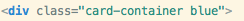

Created: Januray/1/2013
By: David Blanco
Email: davidbo90@gmail.com
Thank you for purchasing my item. If you have any questions that are beyond the scope of this help file, please feel free to email via my user page contact form here. Thanks so much!
Each card needs to be nested within a section tag with a class of "card-container". Inside the section tag all needs to be nested within a div with a class of "card", and here is where we can change the behavior of the Flipping Card. Inside there are 2 divs, one with a class of "Front" for the Front side of the card, and the other with a class of "back" for the Back side of the card.
All you need is to change the data-direction tag of the div with a class of "card"
For example if you wish to add the blue color just add it like this: 
If you wish to create your own color you can go ahead and take a look at the end of the flipCard.css file to the ones that are already there and copy the pattern that goes like this (e.g. for a black color):
/* BLACK */
.black div.card{
color: white;
border: 1px solid black;
}
.black div.card div{
background: black;
}
And then just add it there to the flipCard.css file.
If you would like to edit the background color, color, font, or style of the Flipping Cards, you would do the following:
.card-container .card div{
background: #FBFBFB;
border: 1px solid #BFBFBF;
}
If you want to be more especific and edit just one side you would do the following for the front side:
.card-container .card div.front{
background: #FBFBFB;
border: 1px solid #BFBFBF;
}
and you would do the following for the back side:
.card-container .card div.back{
background: #FBFBFB;
border: 1px solid #BFBFBF;
}
If you want to edit the velocity of the Flipping Card you would do the following (just change the .7s to the velocity in seconds that you wish):
.card-container .card {
-webkit-transition: -webkit-transform .7s;
-moz-transition: -moz-transform .7s;
-o-transition: -o-transform .7s;
-ms-transition: -o-transform .7s;
transition: transform .7s;
}
So, to ensure that your new styles are applied, make sure that they carry enough "weight" and that there isn't a style lower in the CSS file that is being applied after yours.
I'm using two CSS files in this plugin. The first one is just some random style for the demo, and it is NOT needed.
The second one contains all the CSS3 3D effects and style for the Flipping Cards. The file is separated into sections using:
/* === CARD CONTAINER === */ some code /* === CARD === */ some code /* === STYLE FOR THE FRONT & BACK SIDE === */ some code /* === BEGGINING EFFECT === */ some code /* === EFFECT DIRECTIONS === */ some code
If you would like to edit a specific section of the site, simply find the appropriate label in the CSS file, and then scroll down until you find the appropriate style that needs to be edited.
This plugin imports two Javascript files.